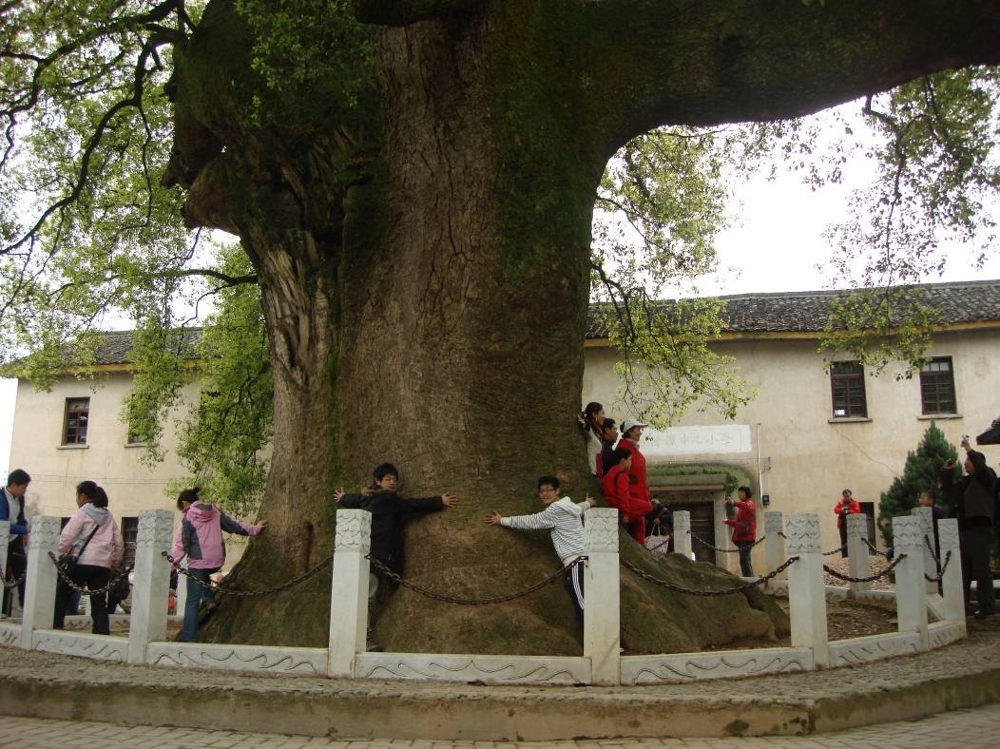

发信人: xumengchao (枫), 信区: outdoor
标 题: 新安江游记
发信站: 饮水思源 (2010年04月08日18:27:23 星期四)
新安江徒步游
by-金永青
出发：六点半，准时庙门等待大家。和xmc想着车上怎么整人~~一边互相测着ws的脑筋
急转弯，说下笑话，一边想象着待会儿有人答不上来被惩罚的场景。答错题报纸对折，对
折再对折……嘿嘿。七点，陆续到齐，调整，装包，都很顺利。上车后不久，问题出现！
而且是再犯！买的各种药都放在背包里了，包在车底下。懊恼。不过路上游戏还是和预料
的一样，很欢乐，反响很好~xmc功不可没哈~都因为有做过功课丫。某个关于猎人打狼的脑
筋急转弯更是让某些人浮想联翩~
扎营：下车，xmc和cm负责下包数人。我和emz去查看扎营的地方，天公作美，没下雨~
emz说之前的小学没法扎了。路边空地加人家门口水泥地扎之。注意：扎在人家门口得扎在
侧边。帮新手组扎好帐篷巡查完毕后大家各自入帐。想着去年第一次出行也好是在这样凉
丝丝的深夜，在别人的帮忙下扎好自己的帐篷。那个兴奋丫，拍照啦，发信息给同学啦。
至今想起也是一阵激动丫。

行军：一早起，微冷。四处逛荡，看到了那个之前游记中的小学，进去和老乡唠唠，得
知厕所能用，内能扎营，小后悔。因为有个组扎在了较湿的地方，致歉。渡江，老乡曰：
每人两大洋，磨机磨机，就给50。一路上，由于都是水泥路，毫无难度可言。直接导致压
队频频落后甚多，不得时时停而等之。不过也是因为路线简单，提前一个多小时到达吃午
饭的地方凹口。先三国杀打牌后吃饭~虽是冷餐，也是很欢乐。在一次性桌布上用番茄酱写
的野鞋可谓是创意无限~大手一挥，“野”字煞是威武。可惜了右边不得以加上cm的鞋子…
更悲剧的是多了番茄哥的称号…呵呵，不过总算是完美的“野协”啦！果断合照。压队四
人组各拉桌布一角，cm提鞋~perfect~
screen.width - 200){this.width = screen.width - 200}">


screen.width - 200){this.width = screen.width - 200}">
screen.width - 200){this.width = screen.width - 200}">
下午的路紧一些。可惜的是清明时节已经不是油菜花最旺的花期，不过剩下的也足够
用大美来形容啦。关键是原先说两天都是小雨的，结果雨神没来~约等于没下。出了渝岭坞
村，就是心仪久矣的花海了丫~果断下包，进田，拍照，不亦乐乎~大家都各种陶醉，三五
成群，散落在花海，沉浸在自己和油菜花的世界之中咯。
screen.width - 200){this.width = screen.width - 200}">
screen.width - 200){this.width = screen.width - 200}">
screen.width - 200){this.width = screen.width - 200}">
screen.width - 200){this.width = screen.width - 200}">
screen.width - 200){this.width = screen.width - 200}">
到达漳潭前五里的一个村子，有段路被水淹了，值得叫渡船，又加五十大洋。达到漳
潭，经村人指点，顺利找到老洪家，果断扎营。强调，他家门前广场大部分地方都能扎入
地丁哦~还有，途经的各个村庄镇子，有各种原料卖的（有小组居然买菠萝）面粉都有- -
估计要最fb的话就带个人和钱也行。囧。
扎营的时候还飘了点毛毛雨，所以有的组就把烧饭吃饭的各种家伙都带到边上的学
校里的走廊下了~那貌似也是景区的一部分，汗，第二天有旅游团过来还听到导游说这儿有
个学校说明了安徽人注重教育……不过村子里的千年古樟确实很霸气。还有个介绍民俗用
具的地方第二天也去溜达溜达了下。接下来的重头戏当然是fb啦~各小组八仙过海咯~有图
为证，排骨汤啦，炒年糕啦，涮羊肉牛肉啦，烤番薯啦etc
screen.width - 200){this.width = screen.width - 200}">
 screen.width - 200){this.width = screen.width - 200}">
screen.width - 200){this.width = screen.width - 200}">
screen.width - 200){this.width = screen.width - 200}">
screen.width - 200){this.width = screen.width - 200}">
screen.width - 200){this.width = screen.width - 200}">
screen.width - 200){this.width = screen.width - 200}">
炒完我们组的第一锅年糕，我就果断去买柴火。继续重头戏——篝火。朴实的老乡，
出价竟然一捆柴要30+，唉，感叹，必然以为上海来的是有钱的主。果断砍价，五折买之。
又向老乡要了些毛柴，因为没下雨，轻松把篝火生起来~于是乎，聚集起大伙儿，便开始各
种ws啦~~~jgb的提议，开始“我爱你”“不要脸”的游戏。围着暖烘烘的火焰，大家就这
么high起来咯。惩罚也是各种ws，钢管舞，公主抱，之后省略 。不得不说的是有人好有心
的丫~~还带了烟花啊小烟火啊~~推向高潮。
screen.width - 200){this.width = screen.width - 200}">


screen.width - 200){this.width = screen.width - 200}">
screen.width - 200){this.width = screen.width - 200}">
--
※ 来源:·饮水思源 bbs.sjtu.edu.cn·[FROM: 59.78.28.147]
|